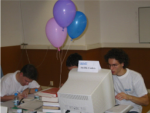

- Home
- Research
- Publications
- Software
- Teaching
- Prog. Contests
- Awards
- About Me
- Contacts

Pedro Ribeiro
University of Porto
Programming Contests
Skip to: History | List of my problems
 I have a strong connection with all kinds of programming contests. I feel that they can be a huge motivation factor for students, helping in the promotion of computer science and the desire for always knowing more.
For a more complete list of the prizes I got in the contests I participated see my awards section. For a more textual description of my involvment in contests or for a list of my problems, continue in this page.
History
Olympiads in Informatics
It all started when I was 15 years old and still in high school, influenced by my brother. While still on 9th grade I participated in the National Olympiads in Informatics (ONI) and I was the youngest contestant. I was 2nd in the national finals and obtained the right to represent Portugal in the International Olympiads in Informatics (IOI) in the Netherlands. I also got the opportunity to participate in a training campus organized by Prof. Pedro Guerreiro which proved to be very influential on good programming techniques.
From there it all started to be part of my life. While I was still at high school, I entered three more editions of ONI and got the 1st place in all of the national finals. With that, I represented Portugal in three more IOI's, held at Hungary, South Africa and Portugal.
Nowadays I cannot participate but I'm still actively involved in the community. I'm one of the main organizers of the National Olympiads, being responsible for part of the logistics (the finals are in my department) and the web site. I'm also active on the scientific side (I'm a problemsetter), I organize the training campus for the students and I am currently the portuguese team leader at the IOI (from 2005 to 2008 I was the deputy leader and since 2009 I'm the team leader).
In 2012 and 2013 I was responsible for organizing the Ibero-American Informatics Contest (CIIC), a programming contest for the secondary students of the Iberian Pensinsula and South America.
ACM-ICPC Competitions
When I entered the university, I promoted programming competitions and basically helped in the first experiences in my faculty on that field in the ACM-ICPC International Collegiate Programming Contest, which is a team contest (up to three students), in opposition to the Olympiads, which are individual.
In 1999 I entered my first Southwestern Europe Regional Contest (SWERC) obtaining the 11th place among teams from 4 different countries.
In 2000 the University of Porto Programming Contest (CPUP) was started, with teams from several departments, and I won that first edition. In SWERC'2000 I was now 2nd and failed the qualification for the world finals by a single place (only one team passed at that time - the next edition saw 2 teams advancing but also more countries participating: Switzerland, Austria and Germany.).
I then proceeded to won all editions of CPUP I participated in (2000 to 2003), gaining the right to represent my university at SWERC level, where I was always part of the best portuguese team. During those years I helped in founding the National ACM-ICPC Portuguese Contest (MIUP), with teams from all over the country. I won three editions of that contest, from 2001 to 2003.
While training, among several other sites, I dedicated some time to the UVA Online Problem Archive, in which I solved more than 600 programming problems.
Nowadays I cannot participate as a contestant but I'm an active problemsetter and organizer. I am part of the organization of CPUP and MIUP, and I coach the department teams. Since 2005 I also run the problems discussion session of MIUP, talking about the solutions of all the problems. In 2012 and 2015 I was the director of MIUP and I hosted it at DCC/FCUP<./p>
IEEEXtreme Programming Contest
I was part of the scientific committee of the IEEEXtreme Programming Contest in 2008 and 2009, authoring several problems.
Logical Programming Contests
All the afore mentioned contests use imperative programming (I mainly use C/C++). In 2003 I decided to experiment another programming paradigm in contests and I participated for the first time in the National Logic Programming Contest (CENPL), working in Prolog. The contest had an open division, in which post-graduate students could participate and I got the global first place.
I repeated the experience in 2004 and 2005 (where the contest gained a functionl arm, with Haskell being permitted) and in both years I repeated the global first place.
Cyber-Mouse Competition
In 2002, during my final Bsc project, I decided to enter a different competition, dedicated to artificial intelligence. I participated in the Cyber-Mouse virtual robot contest, in which a software agent has to be very fast in solving a maze. I got the first place among teams from several institutions. In 2003 I won again and continued to participate until 2006 (albeith spending less and less time developing the agent), obtaining the 2nd place in 2005.
List of my problems
This is a list of some of my online available problems that were used on real programming competitions. I also contributed to many other contest problems (either on ideas, problem statement or solutions) and I have authored dozens of other problems used in several types of courses.
Southwestern Europe Regional ACM ICPC Contest (SWERC)
- Passwords, SWERC'2016
National ACM ICPC Programing Contest (MIUP)
- Space Invaders, MIUP'2019
- Clocks, MIUP'2018
- Clocks, MIUP'2018
- Magnetic Fields, MIUP'2017
- Problem Setters, MIUP'2016
- Concatenate, Son, Concatenate!, MIUP'2015
- Team Formations, MIUP'2014
- Boundaries, MIUP'2013
- Flying Balloons, MIUP'2012
- Lego Mosaics, MIUP'2011
- Domino Trouble, MIUP'2009
- School Garden, MIUP'2008
- Spider-Pig, MIUP'2007
- Round and Round Maze, MIUP'2006
- Car Rallying, MIUP'2005 (w/ Fernando Silva)
- Walking Around Wisely, MIUP'2004 (w/ Fernando Silva)
University of Porto Programming Contest (CPUP)
- TV Audience, CPUP'2008
- Overcrowded School, CPUP'2008
- Counting pieces, CPUP'2008
- Drawing Paper, CPUP'2008
- Triangle World, CPUP'2007
- Entering the Stadium, CPUP'2007
- Reforestation Plan, CPUP'2007 (w/ Fernando Silva)
- Sudokube, CPUP'2007
- Summing Numbers, CPUP'2007
- Unattainable Numbers, CPUP'2007
- Chomp, CPUP'2007
- The Guessing Game, CPUP'2006
- Kaprekar Numbers, CPUP'2006
- Bridge Building, CPUP'2006
- Lemmings Battle!, CPUP'2006
- Master Mind Helper, CPUP'2005
- Fibonaccimal Base, CPUP'2005
- Tweedle Numbers, CPUP'2005
- The Pieces of the Puzzle, CPUP'2005
- Uno game, CPUP'2005
- Jumping Champion, CPUP'2004
- Dividing Land, CPUP'2004
- Euro 2004, CPUP'2004
- ASCII Mandelbrot, CPUP'2004
IEEEXtreme Programming Contest (IEEEXtreme)
- Maze Keys, IEEEXtreme'2009
- Police Station, IEEEXtreme'2009
- Proctoring, IEEEXtreme'2009
- Xtrebble, IEEEXtreme'2009 (w/ Pedro Guerreiro)
- Road Construction, IEEEXtreme'2008
Ibero-American Informatics Contest (CIIC)
- Transforming Words, CIIC'2013
- Symmetries in the Mirror, CIIC'2012
- Complicated Traffic, CIIC'2012
National Olympiads in Informatics (ONI)
All these problems are in portuguese.
- Códigos Preguiçosos, ONI'2018 Final
- Sequências Complementares, ONI'2017 IOI Selection
- A Corrida, ONI'2017 Qualification (w/ Pedro Paredes)
- Regras Quadriculadas, ONI'2016 IOI Selection
- Números Sortudos, ONI'2016 Final
- No Fundo do Mar, ONI'2016 Final
- Caderno Quadriculado, ONI'2016 Qualification
- Padrões Geométricos, ONI'2015 IOI Selection
- À Procura de um Número, ONI'2015 IOI Selection
- Quase Capicuas, ONI'2015 Final
- Obras na Via Férrea, ONI'2015 Final
- Dois Tipos de Programadores, ONI'2015 Final
- Confusão Classificativa, ONI'2015 Qualification
- Tabuleiros Axadrezados, ONI'2014 Final
- Blocos Numéricos, ONI'2014 Final
- Cartas Colecionáveis, ONI'2014 Qualification
- Desenhando Quadrados, ONI'2014 Qualification
- Alice no País dos Primos, ONI'2013 Final
- Constelação Retangular, ONI'2013 Final
- Apagando Letras, ONI'2013 Final
- Frota Imperial, ONI'2013 Qualification
- Triângulos de Pascal, ONI'2012 Final
- Arranha-Céus, ONI'2012 Final
- Saltitando, ONI'2012 Final
- Cromos Repetidos, ONI'2012 Qualification
- Código Genético, ONI'2012 Qualification
- Pontos e Rectângulos, ONI'2011 Final
- Para Cima e Para Baixo, ONI'2011 Final
- Labirinto em Espiral, ONI'2011 Final
- Bakugans, ONI'2011 Qualification
- Para o Infinito e Mais Além, ONI'2011 Qualification
- Trinta e Três, ONI'2010 Final
- Publicidade via Satélite, ONI'2010 Final
- Nenúfares, ONI'2010 Final
- Uma Questão de Divisores, ONI'2010 Qualification
- Nuvem de Cinzas, ONI'2010 Qualification
- Pirâmide de Palavras, ONI'2010 Qualification
- Somas de Quadrados, ONI'2009 Final
- Escolas, ONI'2009 Final (w/ Pedro Guerreiro)
- Palavras para que te quero, ONI'2009 Final
- Dubai, ONI'2009 Qualification
- Pequenos Alfabetos, ONI'2009 Qualification
- Comprar Pixels, ONI'2009 Qualification
- Pirâmides, ONI'2008 Selection Camp (w/ Pedro Guerreiro)
- Faraó, ONI'2008 Selection Camp (w/ Pedro Guerreiro)
- Caravanas, ONI'2008 Selection Camp (w/ Pedro Guerreiro)
- Controle de Tráfego Aéreo, ONI'2008 Final
- Números Fáceis de Escrever, ONI'2008 Final
- Vigiando a Fronteira, ONI'2008 Final
- Indiana Jones e o Triângulo Perdido, ONI'2008 Qualification
- O Carteiro Paulo, ONI'2008 Qualification
- Primómetro, ONI'2007 Selection Camp
- Encontros no Metro, ONI'2007 Selection Camp
- Turismo Espacial, ONI'2007 Final
- Números Divertidos, ONI'2007 Final
- Planeta Arrakis, ONI'2007 Final
- Um-Dó-Li-Tá, ONI'2007 Qualification
- Números Olímpicos, ONI'2007 Qualification
- Magia com Espadas, ONI'2006 Selection Camp
- Ronda Nocturna, ONI'2006 Selection Camp
- Planeta Diagonal, ONI'2006 Final
- O Campeão dos Saltos, ONI'2006 Qualification
- Condomínio Ideal, ONI'2005 Selection Camp
- Sopa de Primos, ONI'2005 Selection Camp
- A máquina do Professor ONI, ONI'2005 Final
- Em busca dos enunciados perdidos, ONI'2005 Final
- Descobrindo Anagramas, ONI'2005 Qualification
- Em Busca dos Números Perdidos, ONI'2004 Final